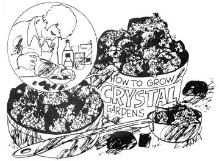

When the cold winter winds blew and the snow was drifted up to the woodshed eaves, great grandma used a crystal garden to keep her brood occupied through a long evening or two. You can do the same. All you'll need is some household ammonia, liquid bluing, food coloring, non-iodized table salt, water, a six-inch dish and a brick or couple of lumps of soft coal.
Cover the brick or coal (so the pieces won't fly up) and wallop it into walnut-sized lumps with a hammer. Arrange the chunks in the center of the dish.
Now mix - in this order - four tablespoons of plain (not iodized) salt, four tablespoons liquid bluing, four tablespoons water and one tablespoon of ammonia. CAUTION:Ammonia can be harmful and children should use it only with adult supervision.
Stir the mixture until the salt dissolves and pour it over the lumps of brick or coal. Then, with an eyedropper, drip spots of food coloring onto the wet chunks.
That's it. In a few hours, your garden of spider-webby, cauliflower-like crystals will spring up in tints and shades of the coloring you used. Handle the dish gently and the fragile growths can delight you for weeks.
|
 |
|
|